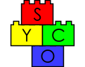

|  |
Ninth Symposium on Compositional Structures (SYCO 9)Como, Italy |
The Symposium on Compositional Structures is a series of interdisciplinary meetings aiming to support the growing community of researchers interested in the phenomenon of compositionality, from both applied and abstract perspectives, and in particular where category theory serves as a unifying common language. We welcome submissions from researchers across computer science, mathematics, physics, philosophy, and beyond, with the aim of fostering friendly discussion, disseminating new ideas, and spreading knowledge between fields. Submission is encouraged for both mature research and work in progress, and by both established academics and junior researchers, including students.
Submission is easy, with no format requirements or page restrictions. The meeting does not have proceedings, so work can be submitted even if it has been submitted or published elsewhere. You could submit work-in-progress, or a recently completed paper, or even a PhD or Masters thesis.
While no list of topics could be exhaustive, SYCO welcomes submissions with a compositional focus related to any of the following areas, in particular from the perspective of category theory:
This new series aims to bring together the communities behind many previous successful events which have taken place over the last decade, including Categories, Logic and Physics, Categories, Logic and Physics (Scotland), Higher-Dimensional Rewriting and Applications, String Diagrams in Computational, Logic and Physics, Applied Category Theory, Simons Workshop on Compositionality, the Yorkshire and Midlands Category Theory Seminar and the Peripatetic Seminar in Sheaves and Logic.
This event follows SYCO 1 in Birmingham, SYCO 2 in Strathclyde, SYCO 3 in Oxford, SYCO 4 in California, SYCO 5 in Birmingham, SYCO 6 in Leicester, and SYCO 8 in Tallinn.
| Olivia Caramello | Robert Furber |
| University of Insubria | University of Edinburgh |
| Title: Relative toposes as a generalization of locales | Title: A Probability Monad on Measure Spaces |
All deadlines are 23:59 anywhere-on-earth on the given dates.
| Time | Thursday 8 September | Friday 9 September |
|---|---|---|
| 9:30–10:00 | ||
| 10:00–10:30 | Invited talk: Olivia Caramello, Relative toposes as a generalization of locales | |
| 10:30–11:00 | Registration and Coffee | |
| 11:00–11:30 | BREAK | |
| 11:30–12:00 | Invited talk: Robert Furber, A Probability Monad on Measure Spaces | Morgan Rogers, Continuous monoid homomorphisms and geometric morphisms, (slides) |
| 12:00–12:30 | Niels Voorneveld, Cylinder Diagrams: Visualizing Multi-Parameter Natural Transformations, (slides) | |
| 12:30–13:00 | Jakob von Raumer, String Diagrams for Strings and Rings, (slides) | Mattia G. Bergomi and Pietro Vertechi, Neural network layers as parametric spans, (slides) |
| 13:00–13:30 | LUNCH | LUNCH |
| 13:30–14:00 | ||
| 14:00–14:30 | Matthew Earnshaw and Paweł Sobociński, Regular Monoidal Languages, (slides) | Gabriele Lobbia, Ivan Di Liberti and Lurdes Sousa, Kan Injectivity and KZ-monads, (slides) |
| 14:30–15:00 | Paolo Perrone, Lifting weights: enriched lenses between transport plans, (slides) | Lia Yeh, Conversation Logic: The Interplay of Negation, Conjunction, Disjunction, and Lexical Entailment, (slides) |
| 15:00–15:30 | Simona Paoli, Weak Globularity: a New Paradigm to Weaken Higher Categorical Structures | Dylan Braithwaite and Jules Hedges, Dependent Bayesian Lenses: Categories of Bidirectional Markov Kernels with Canonical Bayesian Inversion, (slides) |
| 15:30–16:00 | BREAK | BREAK |
| 16:00–16:30 | Siddharth Bhat, Elena Di Lavore, Pim de Haan, Miguel Lopez, Mario Román, Nicoletta Sabadini, Ruben Van Belle, Cyclic Causal Networks via Partial Markov Categories, (slides) | |
| 16:30–17:00 | Malin Altenmüller and Ross Duncan, A Category of Plane Graphs, (slides) | |
| 17:00–17:30 | Sebastian Stengele, Tobias Reinhart, Tomáš Gonda and Gemma De Las Cuevas, A Framework for Universality Across Disciplines, (slides) |
Registration is now closed.
The local organisers are Nicoletta Sabadini (nicoletta.sabadini@uninsubria.it), Simone Tini (simone.tini@uninsubria.it), Elena Di Lavore (elendi@ttu.ee) and Joshua Wrigley (jwrigley@uninsubria.it).
The meeting will take place in the beautiful Chiostro di Sant'Abbondio, in the center of Como.
By plane: fly to any of the airports close to Milano (Malpensa, Orio al Serio, Linate) and then:
Some suggestions can be found below.
If the above suggestions are fully booked, try looking on Airbnb or Booking. Cheaper accommodation can be found in nearby towns. There are buses to and from almost all nearby towns. In particular there are direct buses from Bellagio, Menaggio and Erba stopping in every town on the way to Como. Timetables can be checked on Google maps and tickets selling points can be found in almost every town (check the list on the bus company website). There are also regional trains from Milano stopping in some towns on the way (tickets and timetables on Trenord website).
Como is a touristic city. Please consider booking your accommodation early.
It will be possible to follow all talks online. Registered online participants have been contacted by e-mail with the virtual coordinates. Please let us know if you haven't received this information.
There will be welcome drinks on Wednesday night from 20:00 at Doppio Malto, Piazza San Fedele.
There will be an informal conference dinner on Thursday night at 20:00 preceded by a walking tour of Como from the conference venue to the restaurant La vita è bella, viale Lecco.
There will be a boat tour on Saturday, starting at 9:00 from Como and ending at around 20:00. Meeting point: Imbarcadero di Como at 8:40. The boat leaves at 9:00 and we need to buy tickets (they cost around 30€ per person). The ending time and the route can be flexible, so there will be the possibility of going back to Como earlier from any of the intermediate stops. We will visit Bellagio (arrive at 9:50), Varenna (arrive at 10:58), Villa Carlotta (arrive at 12:40), Tremezzo, Villa del Balbianello (arrive at 15:09 in Lenno), and Cernobbio (arrive at 17:25 or 18:35).
Participants, in person or online, include:
The intention is for SYCO to be a community meeting, where people have enough time to explain their ideas, and with a friendly and non-competitive atmosphere. To encourage this, in the event that more submissions are received of an acceptable standard than can be accommodated in the timetable, the programme committee may choose to defer some submissions to a future meeting, rather than reject them. This would be done based largely on submission order, giving an incentive for early submission, but would also take into account other requirements, such as ensuring a broad and inclusive scientific programme. Deferred submissions can then be re-submitted to any future SYCO meeting, where they will be prioritised for inclusion in the programme, and where they will not need to be re-reviewed. Meetings are held sufficiently frequently to avoid a backlog of deferred papers.
Submissions are by EasyChair, via the SYCO 9 submission page: https://easychair.org/my/conference?conf=syco9.
Submissions should present research results in sufficient detail to allow them to be properly considered by members of the programme committee, who will assess their interest to the SYCO community. We encourage the submission of work in progress, as well as mature results. There are no proceedings, so work can be submitted even if it has been previously published, or has been submitted for consideration elsewhere. There is no specific formatting requirement, and no page limit, although for long submissions authors should be aware that reviewers will not be able to read the entire document in detail. Think creatively—you could submit a recent paper, draft notes of a project in progress, or even a recent Masters or PhD thesis.
If you have a submission which was deferred from a previous SYCO meeting, it will not automatically be considered for this event; if you would like to present it, you must submit it again through EasyChair. Such a submission will be prioritised for inclusion in the scientific programme. When submitting, append the words "DEFERRED FROM SYCO X" to the title of your paper, replacing "X" with the appropriate meeting number. There is no need to attach any documents.
{kind=link}